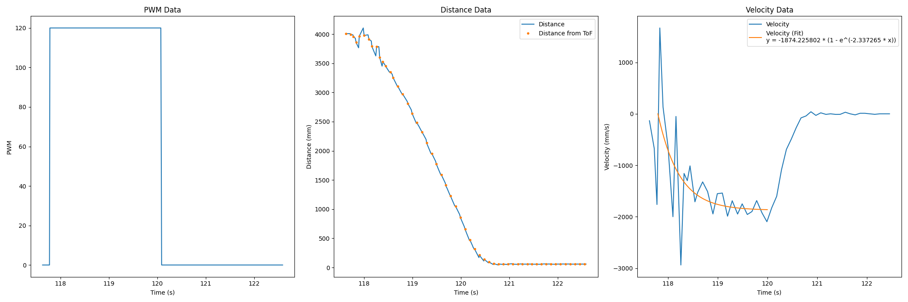
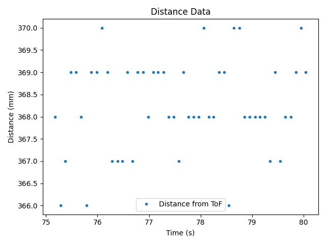
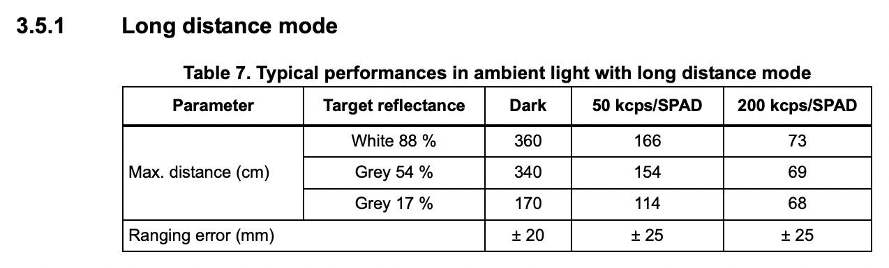
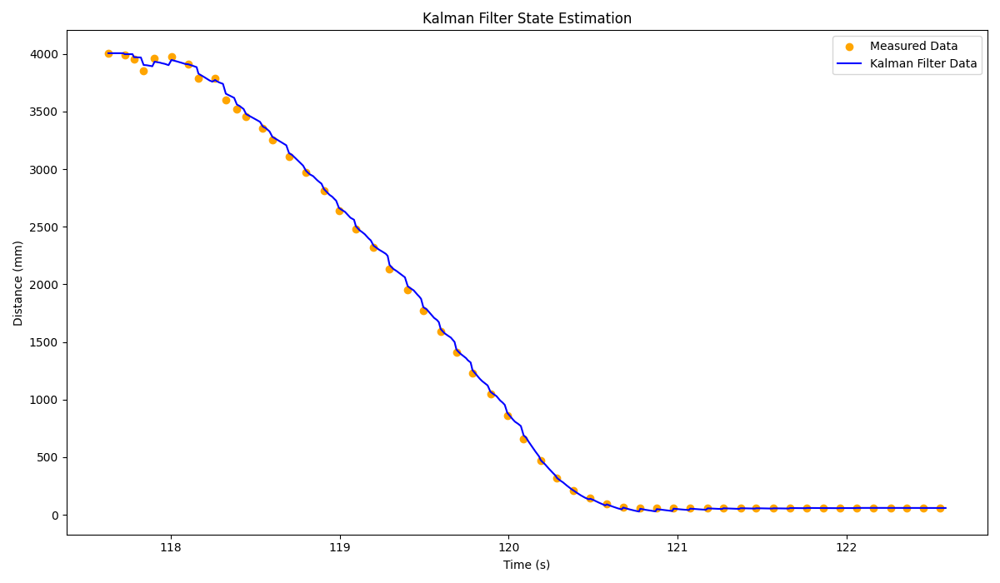
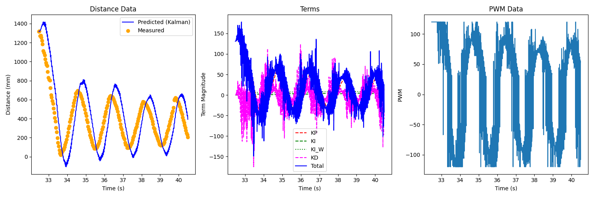
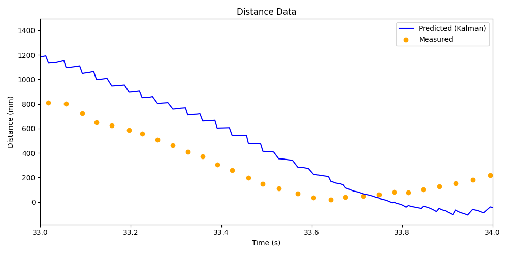
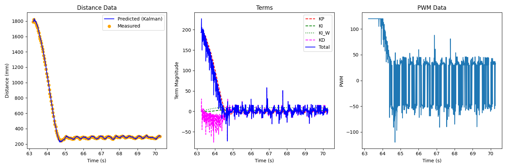
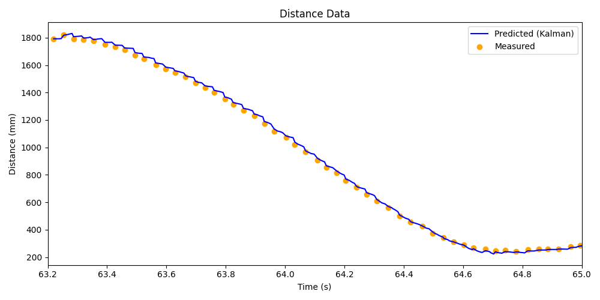

Lab 7: Kalman Filtering
With our preliminary data, we can now construct a Kalman filter to help reduce the impact of noise in our sensors
Estimating Drag and Momentum
The first thing we needed to do was estimate the drag and momentum of the car by using a step response and observing the velocity. For this, I reused my Lab 5 code (using the ToF measurements to get distance), but replaced the PID controller with a step response sent from Python (ranging from 0 to 120 PWM, corresponding to stationary and full speed). From this, we can get the velocity measurements from the distance data; although somewhat noisy due to sensor and time variance, the data was clean enough to fit to the expected exponential decay:
{kind=link}
Here, the fitted exponential (using the start of the step input as \(x = 0\)) is
We can see from the fit that:
The steady state speed (when \(x\) is large, so \(e^{-2.3373x} \rightarrow 0\)) is \(1874.2258 \frac{mm}{s}\); we can visually see that this is where the graph plateaus to
Accordingly, the 90% rise time speed (90% of steady-state) is \(0.9 \cdot 1874.2258 = 1686.8032 \frac{mm}{s}\)
The 90% rise time (when \(y = -1686.8032\)) is reached at \(x = 0.98516 s\)
Taking \(u = 1\) (a.k.a. 120 is our maximum PWM acceleration), we can now solve for our drag and mass (taking \(v = 0.9\) to represent the 90% velocity, similar to \(u\))
Initializing the Kalman Filter
From here, we can compute our Kalman Filter matrices, starting with our values above:
v_ss = 1874.2258
v_0_9 = 0.9 * v_ss
t_0_9 = 0.98516
d = 1 / v_ss
m = (-1 * d * t_0_9) / math.log(0.1)
From here, we can compute our A and B matrices according to our state-space equations:
A = np.array([[0, 1], [0, -(d / m)]])
B = np.array([[0], [1 / m]])
To discretize these, we need the sampling rate of our ToF sensor. I recorded which timestamps of data were valid (shown in the plot above) to calculate this, similar to previous labs:
loop_frequency = (len(data_time) - 1) / (data_time[-1] - data_time[0])
print(f"Loop Frequency: {loop_frequency:>7.6f} Hz")
ready_data_times = []
for i in range(len(data_time)):
if( data_ready[i] ):
ready_data_times.append(data_time[i])
data_frequency = (len(ready_data_times) - 1) / (ready_data_times[-1] - ready_data_times[0])
print(f"Data Frequency: {data_frequency:>7.2f} Hz")
Here, I used the loop frequency, as this would be the prediction rate; the data frequency would be the rate of our updates.
loop_freq = 98.052231
dt = 1 / loop_freq
A_d = np.eye(2) + (A * dt)
B_d = B * dt
We also have our C matrix, representing the states we measure (in this case, only \(x\); unlike the guide, I used a positive coefficient for my positive distance data)
C = np.array([
[1], # distance
[0]] # velocity
)
Lastly, we had to estimate both the process and measurement noise. For the former, I used the expressions from lecture to scale with sampling frequency; for our system, this was \(10.767 Hz\):
For the measurement noise, I initially took a range of stationary distance measurements to get the standard deviation:
{kind=link}
This resulted in \(\sigma_\text{noise} = 1.046\); however, this was significantly less in scale than the others, and would cause the filter to likely over-prefer sensor measurements. Instead, looking at the datasheet, I chose \(\sigma_\text{noise} = 20\), to match the manufacturer ranging error for long-distance (our configuration) in ambient light:
{kind=link}
We additionally need an initial uncertainty in our state \(\begin{bmatrix}x\\\dot x\end{bmatrix}\); for this, I chose \(\sigma = 20\) for the distance (same as our ToF distance uncertainty), and \(\sigma = 1\) for our velocity (as we’re certain that we start stationary, but need some small noise).
data_freq = 10.766541
sigma_x = math.sqrt(100 * data_freq)
sigma_xdot = math.sqrt(100 * data_freq)
sigma_noise = 20
Sigma_u = np.array([[sigma_x**2, 0], [0, sigma_xdot**2]]) # Process
Sigma_z = np.array([[sigma_noise**2]]) # Measurement
sigma = np.array([[20**2, 0], [0, 1**2]]) # Initial state uncertainty
Implementing in Python
From here, we could use the given Kalman Filter function to process our data; I adapted it to only update from our sensor readings if they are valid:
def kf(mu, sigma, data_ready, u, y):
mu_p = A_d.dot(mu) + B_d.dot(u)
sigma_p = A_d.dot(sigma.dot(A_d.transpose())) + Sigma_u
if data_ready:
sigma_m = C.dot(sigma_p.dot(C.transpose())) + Sigma_z
kkf_gain = sigma_p.dot(C.transpose().dot(np.linalg.inv(sigma_m)))
y_m = y - C.dot(mu_p)
mu = mu_p + kkf_gain.dot(y_m)
sigma = (np.eye(2) - kkf_gain.dot(C)).dot(sigma_p)
else:
mu = mu_p
sigma = sigma_p
return mu, sigma
We can use this to iterate through our data (starting from our initial distance measurement and zero velocity as our state). The only processing we need to do is to change our motor PWM output to be \(-1\) when the motor is on (the full scale of \(u\), but decreasing distance), and \(0\) when it’s off:
x = np.array([[data_distance[0]], [0]])
filter_dist = [data_distance[0]]
for i in range(1, len(data_distance)):
x, sigma = kf(
x,
sigma,
data_ready[i],
-1 if (data_motor_pwm[i] == 120) else 0, # u
data_distance[i], # y
)
filter_dist.append(x[0][0])
Plotting this data, we can see that it interpolates between measured data points well:
{kind=link}
This filter depends on the drag and mass, which we determined from our sample data. However, it also depends on the variance we provided for our process and sensors; increasing the variance for our sensor causes our filter to rely more on the model, and vice versa:
{kind=link}
Looking at our first plot, we can see that it is likely overly-reliant on sensor values (especially at the beginning). To find a good middle ground, I increased \(\sigma_\text{noise}\) to \(80\), smoothing out the initial noise while maintaining good estimation:
{kind=link}
Implementing on the Robot
We can now implement a Kalman Filter on the Artemis using our found parameters; I did so using an object-oriented model to establish parameters when initialized, and update when needed (taking the measured distance on the first valid measurement to initialize state):
KF::KF() : first_time( true )
{
Id = { 1, 0, 0, 1 };
float d = 0.000533;
float m = 0.000228;
BLA::Matrix<2, 2> A = { 0, 1, 0, -d / m };
BLA::Matrix<2, 1> B = { 0, 1 / m };
float dt = 0.01020;
A_d = Id + ( A * dt );
B_d = B * dt;
C = { 1, 0 };
float sigma_x, sigma_xdot;
sigma_x, sigma_xdot = 32.813;
sigma_u = { sigma_x * sigma_x, 0, 0, sigma_xdot * sigma_xdot };
float sigma_noise = 5;
sigma_z = { sigma_noise * sigma_noise };
sigma = { 400, 0, 0, 1 };
}
float KF::update( bool data_ready, float u, int distance )
{
if ( first_time ) {
if ( data_ready ) {
// Initialize state
state = { (float)distance, 0.0 };
first_time = false;
return distance;
}
else {
return distance;
}
}
// Prediction
BLA::Matrix<2, 1> mu_p = ( A_d * state ) + ( B_d * u );
BLA::Matrix<2, 2> sigma_p = ( A_d * sigma * ~A_d ) + sigma_u;
// Update
if ( data_ready ) {
BLA::Matrix<1, 1> sigma_m = ( C * ( sigma_p * ( ~C ) ) ) + sigma_z;
BLA::Matrix<1, 1> sigma_m_inv = sigma_m;
Invert( sigma_m_inv );
BLA::Matrix<2, 1> kkf_gain = sigma_p * ( ( ~C ) * sigma_m_inv );
BLA::Matrix<1, 1> y = { (float)distance };
BLA::Matrix<1, 1> y_m = y - ( C * mu_p );
state = mu_p + ( kkf_gain * y_m );
sigma = ( Id - ( kkf_gain * C ) ) * sigma_p;
}
else {
state = mu_p;
sigma = sigma_p;
}
return state( 0, 0 );
}
From here, I integrated this into the run_pid_step function from
Lab 5, now sourcing distance data from the filter:
last_distance_valid = false;
void run_pid_step()
{
bool data_ready;
if ( tofs.sensor1.checkForDataReady() ) {
curr_distance = tofs.sensor1.getDistance();
tofs.sensor1.clearInterrupt();
tofs.sensor1.stopRanging();
tofs.sensor1.startRanging();
data_ready = true;
last_distance_valid = true;
}
else {
data_ready = false;
}
curr_distance_kf = kf.update(
data_ready, ( (float) last_motor_pwm ) / 120.0, curr_distance );
if ( last_distance_valid ) { // We have a valid measurement
pid.update( curr_distance_kf );
curr_total_term = pid.get_control();
curr_motor_pwm = pid.scale( curr_total_term );
}
// Update motors and log data, same as Lab 5
Running this as-is, I initially got poor performance from poor distance predictions, resulting in large oscillations:
 {kind=link}
{kind=link}
We can see that the robot is overpreferring the model to sensor readings; while our sigma values may have worked for an ideal step response, they may not for highly-varying control input. Changing \(\sigma_\text{noise}\) to \(5\) (preferring sensor readings to the model) yielded good results, with high but not exact reliance on sensor readings, and a quick and accurate stop with small oscillations:
 {kind=link}
{kind=link}
Acknowledgements
In this lab, I referenced both Daria’s and Mikayla’s past implementations, which were helpful in determining the Numpy syntax for expressing arrays in Python.